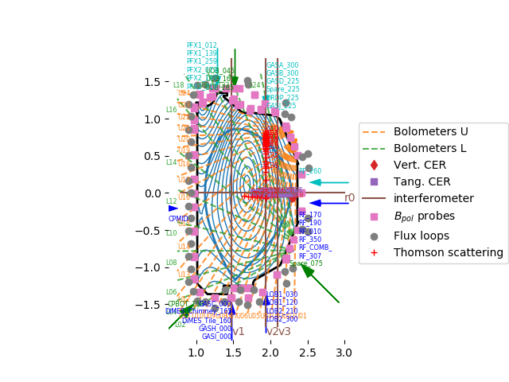

Note
Click here to download the full example code
OMAS plot overlays¶
This example loads sample DIII-D overlay data and generates an overlays plots
from __future__ import print_function, division, unicode_literals
from matplotlib.pyplot import show, gca
from omas import *
import numpy
# load sample data from S3
ods = load_omas_s3('DIIIDoverlay_sample', user='omas_shared')
# plot equilibrium and wall
ods.plot_equilibrium_CX()
# plot overlays
ods.plot_overlay( # Values can be True to simply turn on or dict to pass keywords to specific overlay functions
gas_injection={'colors': ['b', 'g', 'c']}, # , 'which_gas': ['GASA', 'LOB1']},
bolometer={'labelevery': 1, 'mask': numpy.append(numpy.ones(24, bool), (numpy.arange(24) % 2).astype(bool)), 'linestyle': '--'},
thomson_scattering={'labelevery': 4, 'color': 'r'},
debug_all_plots=True,
)
gca().legend(loc='center left', bbox_to_anchor=(1, 0.5))
gca().set_aspect('equal')
# display figure
show()